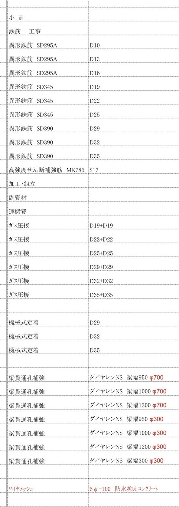
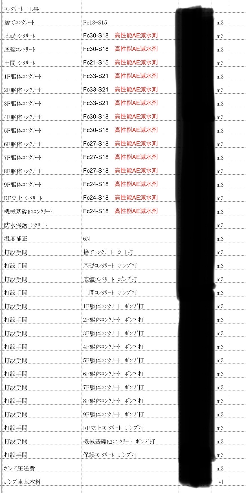
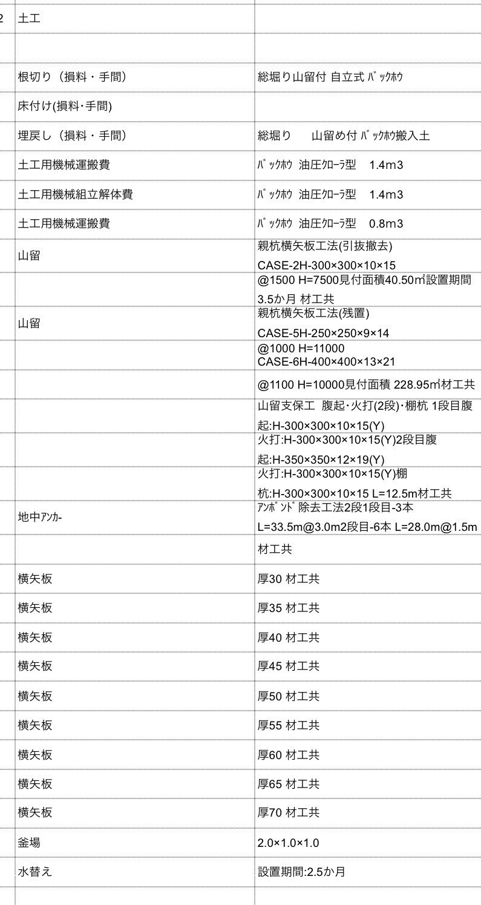
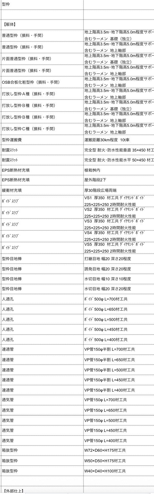
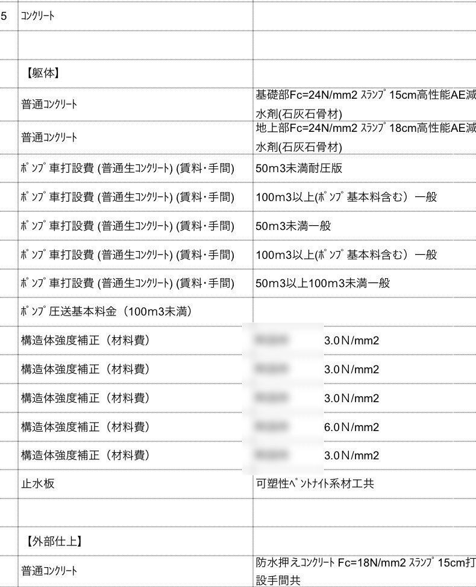
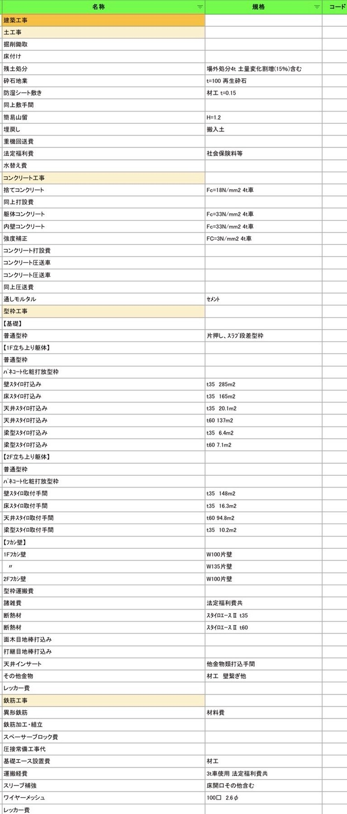

K.seqについて
K.seq（ケー・シーク）は、建築躯体積算・数量拾いを中心に、 積算業務の一部を業務委託として承ります。
積算事務所での実務経験と、個人での積算業務経験を合わせ、 建築積算に約5年携わってきました。図面から必要数量を拾い出し、 正確かつ丁寧に対応いたします。
「案件が重なって手が回らない」「担当者の業務負担を減らしたい」 「一時的に積算人員を確保したい」「数量拾いの一部だけ外注したい」—— 積算事務所様・建設会社様のそうした場面で、スポットの業務委託先として ご活用いただけます。
- 使用ソフト：アドバン「松助くん」
対応する建築積算業務
図面を確認し、躯体工事に必要となる数量を拾い出します。各工種は単独でのご依頼も可能です。
-
01
土工事
-
02
コンクリート工事
-
03
型枠工事
-
04
鉄筋工事
-
05
杭工事
- 内訳書への数量入力：お客様指定のフォーマット等に合わせ、算出した数量を入力します。
- スポット対応：「土工事と躯体だけ」「鉄筋数量だけ」「1物件だけ外注」など、一部工種・一部案件のみのご依頼にも対応します。
実績・経験
積算事務所 約2年、個人での積算業務 約3年。これまでRC造を中心とした 建築物の躯体積算・数量拾いに対応してきました。
- 主な対応用途：RC造マンション／事務所／店舗／その他RC造建築物
対応した内訳書の一部を、案件別にご紹介します（数量・金額は除いた抜粋です）。
某大規模RCマンション


某店舗兼事務所



某個人用住居

K.seqの強み
-
「必要な部分だけ」外注できます
積算業務をすべて外注する必要はありません。繁忙期や人手不足の際に、 必要な工種・案件だけをスポットでご依頼いただけます。
-
正確で丁寧な数量拾い
図面を確認しながら、拾い漏れや二重計上がないよう注意して作業を行います。
-
柔軟な対応
案件ごとの条件や指定フォーマットなど、可能な範囲で対応いたします。
こんな場面でご活用いただけます。
- 案件が重なって手が回らない
- 担当者の業務負担を減らしたい
- 一時的に積算人員を確保したい
- 数量拾いの一部だけ外注したい
料金について
積算料金は、案件ごとにお見積りいたします。下記の内容を確認のうえ、料金・納期をご提示します。
- 延べ床面積
- 建物用途
- 構造・規模
- 図面枚数
- 対応工種
- 杭工事の有無
- 図面の難易度
- 納期
小規模案件から中規模案件まで対応いたします。まずはお気軽にご相談ください。
ご依頼の流れ
-
お問い合わせ
メールよりご連絡ください。
-
図面・条件の確認 / お見積り
図面・対象工種・希望納期などを確認し、料金・納期をご提示します。
-
積算・数量拾い / 納品
ご依頼確定後に数量を算出し、ご指定の形式で納品します。
Contact
積算のご相談・お見積り
スポットでの業務委託、一部工種のみのご依頼、対応可否のご相談まで。 まずはお気軽にお問い合わせください。